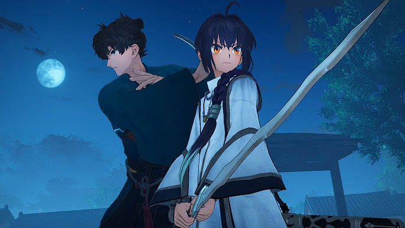

Like many people, I very much enjoy playing video games and have been playing them for many years now. I enjoy playing video games for a multitude of reasons such as they can have really engaging stories, and many video games can be very challenging but very rewarding to play through. Another reason I like playing video games is for the multiplayer aspect of it because it’s a fun way to bond with my friends and brothers. Below this is a list of some of my favourite video games franchises I’ve played.
Recently, I’ve been playing a new video game called Fate/Samurai Remnant that is based off of the Fate series. The game takes place in Edo Japan where you play as a samurai who ends up getting involved in what’s known as a Holy Grail War without any choice (The simplified explanation of what a Holy Grail War is that it’s basically a battle royal where seven people summon a heroic spirit (characters from history, legends, myths, etc. Also known as servants) to fight alongside them, and the winner can get their wish granted from a vessel that’s usually shaped like the Holy Grail, but it is very sketchy and dangerous). The game itself is an action RPG where throughout the game you fight many foes and monsters, you unlock new fighting stances and magic spells as your character gets stronger, and you also get new gear for your character's katanas. Now what makes this game unique from other action RPS is that you fight alongside your servant in combat, and when conditions are met, you can launch powerful team up attacks at the enemies in the game.
©2023 Jacob's HTML project